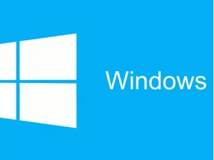

OS wipe - reinstall - upgrade

Over time your operating system and other applications can build up with redundant data and slow even the fastest of PC's. A complete system wipe ensures that your OS and system are always up to date and running efficiently. Typically, this should be done once a year to ensure optimal performance from your computer.